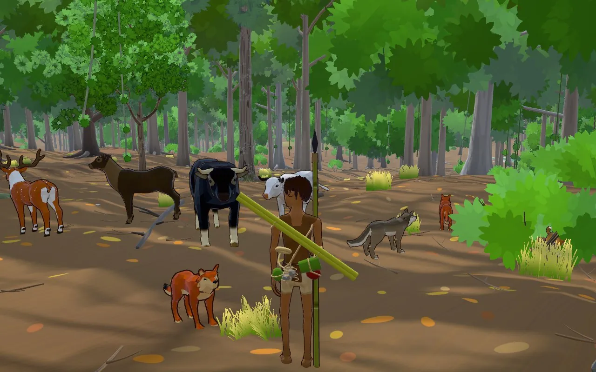

VANAJ: Forest-Born
Three.js · Rapier · Web Audio
3D survival story in the browser: a boy raised by wolves in the Pench forest of central India. Painted look, climbable trees that bend under him, rope swinging, animal AI, tree felling, a raga score, and touch controls for phones.